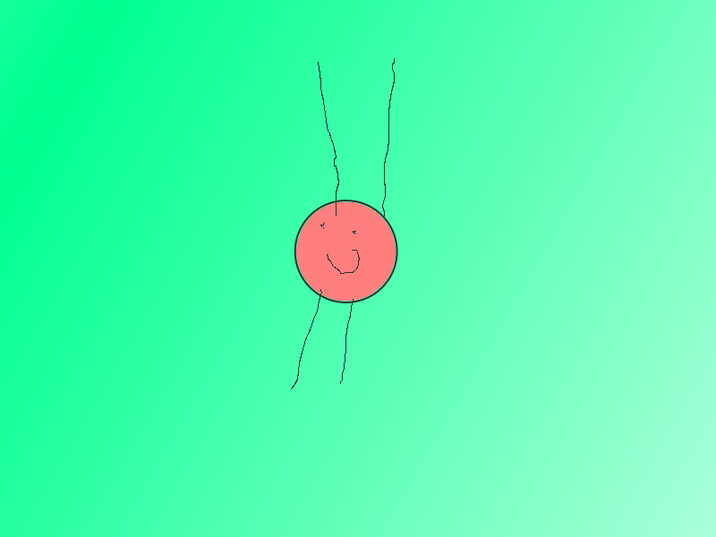

<!DOCTYPE html>
<html lang="en">
<head>
    <meta charset="UTF-8">
    <title>What Are Fununim?</title>
</head>
<body style="background-color:yellow"></body>
<span style="color:red;font-size:40px">What Are Fununim?</span></p>
</body>
</html>
Fununim Are Tiny Creatures You Can Make With Your Body.
There Are Lots of Nim Like <span style="color:red">Fununim.</span>
<span style="color:forestgreen">They </span> Are Nim.This Is A picture of Them:
<p></img></p>
<a href="Fununim%20Are%20Really....html">Next </a>